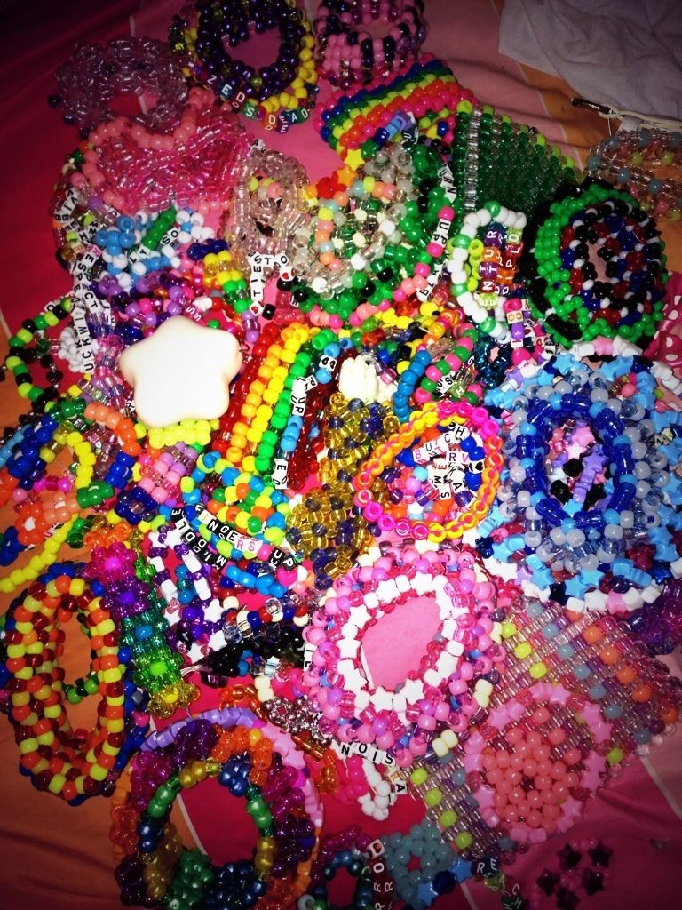
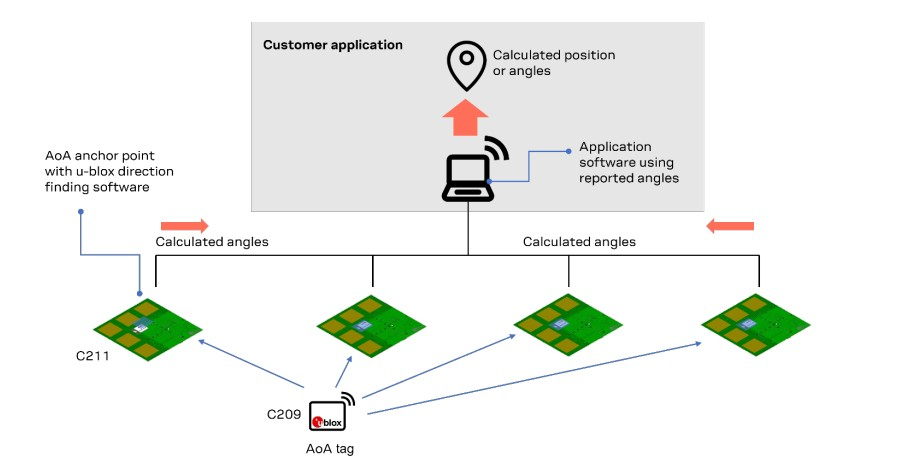
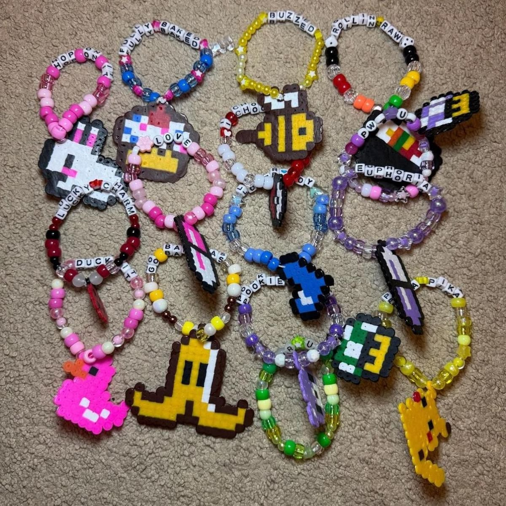
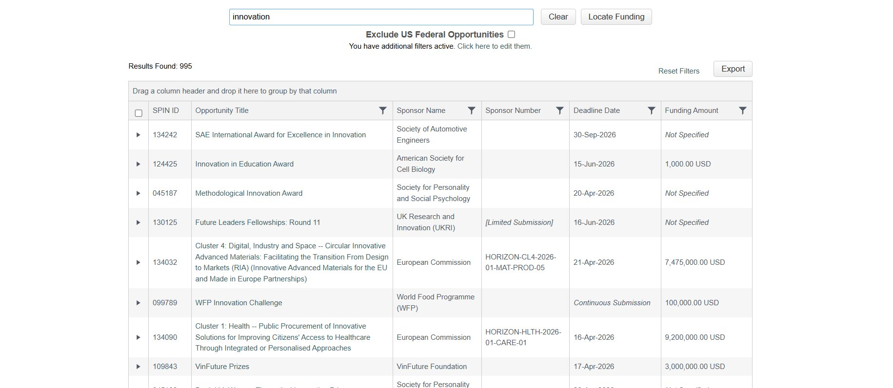
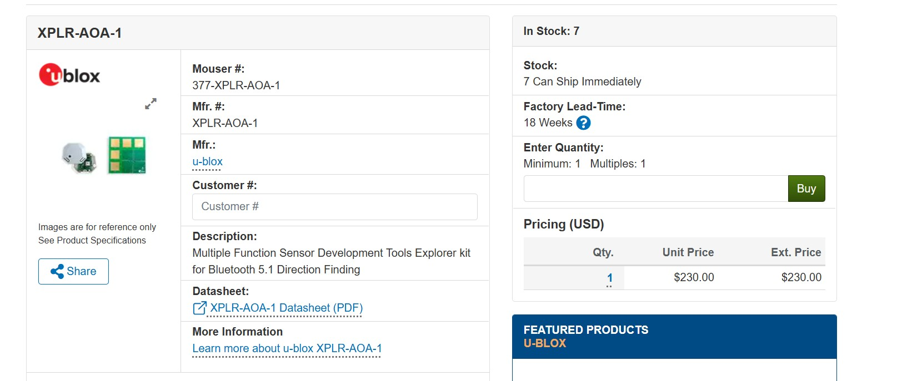
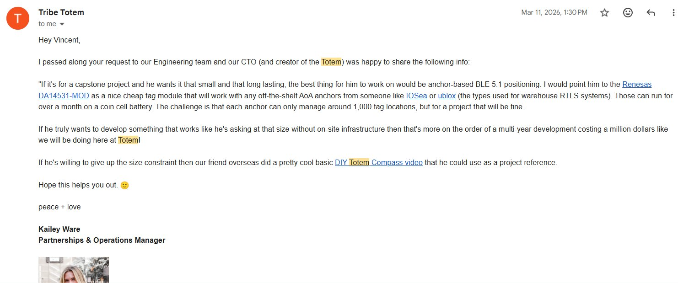

HNUH 300 Capstone
Vincent Von Wachter · Spring 2026 · University of Maryland

Large music festivals and crowded events present a serious safety challenge: existing location-tracking technologies fail precisely when they are needed most.
While tools like Apple AirTag, FindMy, and Life360 dominate the consumer market, no research or product has successfully addressed the accuracy degradation these systems experience in dense, signal-saturated crowds leaving festival-goers, particularly women and LGBTQ+ individuals who face disproportionate rates of harassment and harm, without a reliable way to stay connected to their trusted group.
FestiFind fills this gap by proposing a wearable Bluetooth Low Energy tracker small enough to attach to a Kandi rave bracelet — a staple of the rave community — using an anchor-tag triangulation mechanism that does not rely on cellular service and is not degraded by physical crowd density.
To develop this concept, I researched existing BLE positioning technologies including u-blox XPLR-AOA anchor systems and the DA14531 chip module, consulted directly with the engineering team at Totem Compass (the closest existing competitor), and explored grant funding pathways through UMD SPIN to finance a working prototype.
FestifFind is designed specifically to serve vulnerable populations at large events offering an affordable, culturally embedded safety tool that festivals themselves could adopt and promote, creating mutual benefit for organizers and attendees alike.
Keeping people connected to their people while enjoying music shouldn't cost $80 or require carrying around a massive hockey puck.
While I may not have a tangile working prototype of the FestiFind, I have made significant efforts to make my project a reality. Some of the steps I have taken to make my project a reality include researching the technology I need to build out my solution, finding the materials I will need to build a working prototype, developing a blueprint to explain how the materials and technology will work, and researching funding opportunities to build my solution.
The diagram to the right details how the technology behind FestiFind works. Essentially, it relies on two physical components: an anchor and tag. The tag is what the user will wear on a rave bracelet as an attached charm as you can see in examples below. The tags in the diagram (DA14531 chips) are small enough to attach to a rave bracelet without becoming a burden to users which is what I had in mind when researching location tracking technologies. The second physical component required for FestiFind to work is the anchor which are the green boards in the diagram. The way in which these two components work together is by using the angle of arrival and departure from the tags to the anchors. The anchors then use those angles to triangulate the position of the tags.
For FestiFind to become a reality, we will have to partner with various festivals and events to place these anchors around their grounds to maintain location accuracy. Once these anchors are in place, tags can be connected to them using Bluetooth Low Energy technology and then that location can be sent to a customer application similar to what FindMy and Life360 attempts to do. Once these tags, the anchors, and the user interface are programmed, the tags can be sent out to customers with instructions on how to connect them with the interface and anchors can be sent out to festivals.


Above are illustrations of exactly how the FestiFind will work and what the end product might look like for a user.
An important step in my research was reaching out to a competitor company to give me ideas on what technology I should use to make a working prototype. They pointed me to the materials I ended up using in my final product proposal. My email to them is linked below.
Hello, I am a Computer Science student at the University of Maryland College Park who is currently researching Bluetooth Low Energy tracking devices and mesh network tracking devices in hopes of building my own for a capstone project. I am currently looking into building a tracker that is in a small form factor (hopefully so I can put it in a rave kandi bracelet), accurate, and long lasting. Do you have any advice or ideas for what technologies I could look into (and maybe innovate upon) to build something that is extremely accurate, but doesn't rely on cell service or its accuracy is reduced by the presence of lots of physical objects? I've noticed at raves and festivals apps such as Life360 or FindMy are very inaccurate due to the large number of people which I think is what causes the service to be so terrible. I am not sure how much you can share about how the Totem Compass works for privacy purposes and intellectual property protection, but as much detail as possible would be greatly appreciated.
Looking forward to hearing back,
Vincent Von Wachter
UMD 'CS 27
https://www.linkedin.com/in/vincent-von-wachter-945246315/



In the photos above we can see Totem Compass' response to my email pointing me to the technology and materials I would eventually use for the final design idea for my prototype. We can also see the price of the anchor-tag combo I would need to build a working prototype which was an initial roadblock. From this I looked into getting funding where we can see one of the grant tools I used (UMD SPIN) to gather funding for my eventual physical prototype of FestiFind.
[PARAGRAPH 1] Explain how your sources reveal a relevant concept or set of challenges connected to your project. What intellectual landscape do they collectively map out? What would a newcomer learn from reading them?
[PARAGRAPH 2] Reflect on the nature of your research. To what degree did you rely on traditional academic sources vs. creative, hands-on, or practice-based inquiry? What kinds of knowledge did each type of source contribute? What would you advise someone to read first to understand your project?
What creative or non-traditional research methods did you engage? Interviews, observation, making, community consultation? Acknowledge these as legitimate forms of inquiry.
What did this experience teach you about conceptualizing and designing a project from scratch? What takeaways will you carry into your next project?
Your response here…
How did you utilize feedback from classmates and your instructor? What changed as a result?
Your response here…
What kind of labor went into this project, and how do you feel about that work? What are you most proud of about the final product?
Your response here…
[Optional extended writing] Use this space for a more extended, essayistic reflection. What did you learn about yourself — your schedule, process, habits, and working style? What surprised you about the topic? Write in an honest, personal voice. This is your chance to be candid about what worked, what didn't, and what you would do differently. talk about how i learned html here too that would be funny
Questions, feedback, and suggestions are always welcome!
vvonwach@terpmail.umd.edu